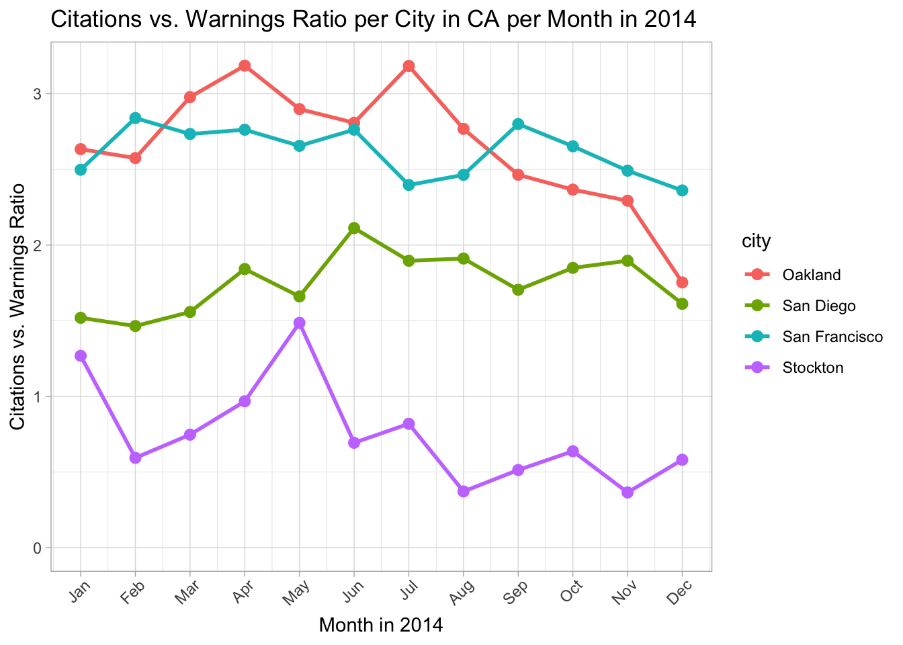
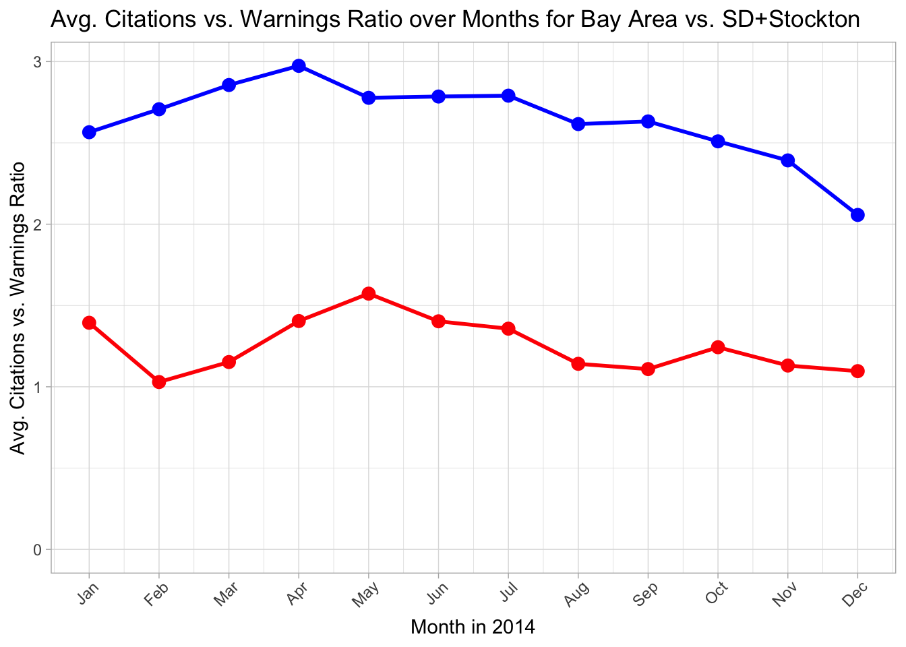

library(DBI)
library(RMariaDB)
con_traffic <- DBI::dbConnect(
RMariaDB::MariaDB(),
dbname = "traffic",
host = Sys.getenv("TRAFFIC_HOST"),
user = Sys.getenv("TRAFFIC_USER"),
password = Sys.getenv("TRAFFIC_PWD")
)Tolerance Levels of Traffic Stops in CA Cities
An analysis on whether different California cities have different tolerance levels regarding how they deal with traffic stops
Introduction
In this analysis, our goal is to examine and analyze any trends between citations and warnings for police stops. We will be using data from the Stanford Open Policing Project, which has data from 42 states with many subdivisions, and is cited down below. We will be looking at the trends of citations and warnings in police traffic stops in 4 cities in CA: Oakland, San Francisco, San Diego, and Stockton. We will aim to make meaning of our data and analyze the degree to which these cities have been tolerant to people at fault in traffic stops, compared to other cities in our analysis and the city itself over time. For the duration of this analysis, to keep things simple, we are going to define “at fault” as being at fault in the police’s eyes – which means for the sake of simplicity, the driver will be seen as at fault if they have received a citation or warning.
SQL Data Wrangling
We first connect to the SQL server:
Now, we import the data from the SQL server:
SELECT city,
month,
SUM(citations_per_month) / SUM(warnings_per_month) AS citations_vs_warnings_ratio,
SUM(citations_per_month) AS citations_per_city_per_month,
SUM(warnings_per_month) AS warnings_per_city_per_month,
SUM(no_punishment_per_month) AS no_punishment_per_city_per_month
FROM (
SELECT 'Oakland' AS city,
MONTH(date) AS month,
IF(citation_issued = 1 AND warning_issued = 0, 1,0) AS citations_per_month,
IF(citation_issued = 0 AND warning_issued = 1, 1,0) AS warnings_per_month,
IF(citation_issued = 0 AND warning_issued = 0, 1,0) AS no_punishment_per_month
FROM ca_oakland_2020_04_01
WHERE date IS NOT NULL
AND citation_issued IS NOT NULL
AND warning_issued IS NOT NULL
AND type = 'vehicular'
AND YEAR(date) = 2014
AND NOT (citation_issued = 1 AND warning_issued = 1)
UNION ALL
SELECT 'San Francisco' AS city,
MONTH(date) AS month,
IF(citation_issued = 1 AND warning_issued = 0, 1,0) AS citations_per_month,
IF(citation_issued = 0 AND warning_issued = 1, 1,0) AS warnings_per_month,
IF(citation_issued = 0 AND warning_issued = 0, 1,0) AS no_punishment_per_month
FROM ca_san_francisco_2020_04_01
WHERE date IS NOT NULL
AND citation_issued IS NOT NULL
AND warning_issued IS NOT NULL
AND type = 'vehicular'
AND YEAR(date) = 2014
AND NOT (citation_issued = 1 AND warning_issued = 1)
UNION ALL
SELECT 'San Diego' AS city,
MONTH(date) AS month,
IF(citation_issued = 1 AND warning_issued = 0, 1,0) AS citations_per_month,
IF(citation_issued = 0 AND warning_issued = 1, 1,0) AS warnings_per_month,
IF(citation_issued = 0 AND warning_issued = 0, 1,0) AS no_punishment_per_month
FROM ca_san_diego_2020_04_01
WHERE date IS NOT NULL
AND citation_issued IS NOT NULL
AND warning_issued IS NOT NULL
AND type = 'vehicular'
AND YEAR(date) = 2014
AND NOT (citation_issued = 1 AND warning_issued = 1)
UNION ALL
SELECT 'Stockton' AS city,
MONTH(date) AS month,
IF(citation_issued = 1 AND warning_issued = 0, 1,0) AS citations_per_month,
IF(citation_issued = 0 AND warning_issued = 1, 1,0) AS warnings_per_month,
IF(citation_issued = 0 AND warning_issued = 0, 1,0) AS no_punishment_per_month
FROM ca_stockton_2020_04_01
WHERE date IS NOT NULL
AND citation_issued IS NOT NULL
AND warning_issued IS NOT NULL
AND type = 'vehicular'
AND YEAR(date) = 2014
AND NOT (citation_issued = 1 AND warning_issued = 1)) AS putting_placeholder
GROUP BY city, month ORDER BY city, month;Since Oakland, San Francisco, San Diego, and Stockton all have their own separate data tables, we join them unionwise (Union All, because we have a lot of recurring data points). In our data table, we want the city name, whether if a citation was issued, and whether if a warning was issued. Also, we only want to see the data that was for traffic stops (not pedestrians). Our data existed fully for all cities only between January 2014 and March 2015, so, to keep things consistent, we will only analyze data in 2014. The months traffic stops happened are numbered 1 through 12. Citations and warnings are usually mutually exclusive; however, it is possible that both may have happened at the same time (perhaps the officer changed their minds, or both a citation and a warning were given for two different reasons in the same stop, etc.). In order to eliminate doubles, we also remove any single stop counting for both a citation and a warning.
It is now possible for a traffic stop in our data set to result in no warning or citation, result in a warning, or result in a citation. No warning or citation is the least severe punishment (no punishment at all) and resulting in a citation is the most severe. The ratio-wise prevalence of citations and warnings could be an indicator of how severely traffic stops are handled. However, they also could be an indicator of how accurate the officers are at assessing when to pull over people. In order to dig deep into actual severity of how traffic stops are handled, we can look at the ratio between how many warnings are given and how many citations are given. There being either a citation or a warning will ensure that the driver was actually seen to be at fault; and taking the citation to warning ratio will give us insight on how severe the punishment was for every traffic stop that had the driver at fault.
To achieve our aim, we put all the previous queries that are mentioned in the last 2 paragraphs under a subquery, and we write a query to sum up the number of citations, number of warnings, and the number of no punishments per month per city. To extract information from the subquery to the query, we add if statements inside the subquery regarding that specific row’s citation/warning/no punishment status and city and month. In the main query, we finally also calculate the ratio of citations vs. warnings per month per city.
We now have all the data we want to work with.
Let’s now output our table:
#My data table was coming out weird because it didn't fit into the page, so, I looked up how to make it nicer, and this library really does make it nicer. This way, I don't even have to do head( ) because you can just scroll between pages of 10 rows.
library(DT)
datatable(citations_vs_warnings_per_city_per_month, options = list(scrollX=TRUE))We see there is some movement between Oakland’s citations vs. warnings ratio over the months, but, we will probably see starker differences between cities instead of between months inside of the same city. We will analyze if such a relation exists by data visualization.
Before we continue with data visualization, it is good practice to disconnect from the SQL server:
DBI::dbDisconnect(con_traffic)Data Visualization and Analysis of Citations vs. Warnings Ratio between Cities
On to data visualization.
library(ggplot2)
library(tidyverse)
ggplot(citations_vs_warnings_per_city_per_month,
aes(x = month, y = citations_vs_warnings_ratio, color = city, group = city)) +
geom_line(size = 1) +
geom_point(size = 2.5) +
labs(title = "Citations vs. Warnings Ratio per City in CA per Month in 2014",
x = "Month in 2014",
y = "Citations vs. Warnings Ratio") +
scale_x_continuous(breaks = 1:12, labels = month.abb) + ylim(0, NA) +
theme_light() +
theme(axis.text.x = element_text(angle = 45, hjust = 0.85))
The above graph shows the citations vs. warnings ratio per California city analyzed per month in 2014. The difference between cities is quite noticeable. Stockton hovers around 0.5-1 citations per warning, whereas Oakland and San Francisco are around 2.5-3. Now, we had already established that in order to possibly reduce the crime rate’s influence on deciding how strict punishments in traffic stops are, we were taking the ratio of citations vs. warnings (which means that in theory, all people who get a citation OR warning ARE at fault, but, only those who get a citation are deemed punished severely). Now, although this may reduce the crime rate’s effect as we are looking at rates WITHIN ‘crimes (very broadly categorized as people at fault)’, it is definitely not enough of a reason by itself.
However, could there be other reasons? Perhaps how urban the city is could be a reason. Stockton is considerably less urban than any of the other cities, and San Diego is a much smaller and well-organized city compared to San Francisco or Oakland. San Francisco and Oakland, being a bridge away, are quite comparable in terms of city layout and do not have population prominence (i.e. Oakland is not an “urban region” of its own because it does not stand standalone in the middle of the country and is grouped in the same urban area as SF, that being the Bay Area), For our analysis, it is safe to group SF+Oakland together as the Bay Area.
In order to just compare 2 variables, we are going to combine Stockton and San Diego together as both are smaller urban centers compared to the Bay Area in terms of the people living in urban residences. Since Stockton, then San Diego, have less population than the Bay Area, these cities having a considerably smaller population (or common-cause being less urban) may be the reason there is a considerable difference, aligning with population/urbanism, for these cities’ citations vs. warnings ratio. This may be caused by a number of factors, but perhaps most prominently; either a smaller population means a more tight-knit community, resulting in officers trusting the goodwill of citizens, or a larger population means officers are not scared to cite law-breakers. Another reason might be that in small cities, should they punish drivers, police may get more personal hatred, as in small cities, it is more likely that the police is known in town on a personal level, whereas in a big city this is extremely unlikely. This may be a deterrent for police to punish those who they might be remotely or closely acquainted with.
Data Visualization and Analysis of Citations vs. Warnings Ratio between Months
We can see that the citations vs. warnings ratio between cities is noticeable, as explained. However, is there also a difference between months inside of cities? We see that Stockton goes up and down in the first half of 2014, and Oakland declines noticeably during the second half of the year; however, it is hard to find a justifiable reason that these may be the case.
To be able to possibly find an underlying correlation between months, let’s try to isolate this possible correlation by trying to remove the effect of cities’ individual conditions on our data. To do this, let’s now graph the Bay Area cities together vs. San Diego and Stockton together. We will specifically be looking at the development of (the citations to warnings ratio of Bay Area cities averaged) vs. (the citations to warnings ratio of SD & Stockton averaged).
ggplot() +
#ggplot does not accept two different variable calculations + mapping, so, here I am separating geom_line s and geom_point s.
#SF+Oakland
geom_line(data = citations_vs_warnings_per_city_per_month |>
filter(city == "San Francisco" | city == "Oakland") |>
group_by(month) |>
summarise(sf_and_oakie = mean(citations_vs_warnings_ratio)),
aes(x = month, y = sf_and_oakie), size = 1, color = "blue") +
geom_point(data = citations_vs_warnings_per_city_per_month |>
filter(city == "San Francisco" | city == "Oakland") |>
group_by(month) |>
summarise(sf_and_oakie = mean(citations_vs_warnings_ratio)),
aes(x = month, y = sf_and_oakie), color = "blue", size = 3) +
#SD+Stockton
geom_line(data = citations_vs_warnings_per_city_per_month |>
filter(city == "San Diego" | city == "Stockton") |>
group_by(month) |>
summarise(sd_and_stockton = mean(citations_vs_warnings_ratio)),
aes(x = month, y = sd_and_stockton), color = "red", size = 1) +
geom_point(data = citations_vs_warnings_per_city_per_month |>
filter(city == "San Diego" | city == "Stockton") |>
group_by(month) |>
summarise(sd_and_stockton = mean(citations_vs_warnings_ratio)),
aes(x = month, y = sd_and_stockton), color = "red", size = 3) +
#Labeling Graph
labs(title = "Avg. Citations vs. Warnings Ratio over Months for Bay Area vs. SD+Stockton",
x = "Month in 2014",
y = "Avg. Citations vs. Warnings Ratio") +
scale_x_continuous(breaks = 1:12, labels = month.abb) + ylim(0, NA) +
theme_light() +
theme(axis.text.x = element_text(angle = 45, hjust = 0.85))
With this graph, we can see in more detail the difference between Bay Area cities (shown in blue) vs. SD and Stockton (shown in red). However, this graph also makes us see if there is any correlation between time passing and punishment severity.
We see that both Bay Area cities and SD+Stockton peak in April or May, and then gradually go down in punishment severity. This is not clear or substantial enough that we can say that this is not a result of just pure chance, but it is possible that something made punishments more severe in April-May 2014 and made them gradually decline. Possible, fully hypotethical explanations may include events going on around the country or new policing regulations in CA or the US around this time. Or, perhaps police become most comfortable hitting their citation quota around 4-5 months in and then slowly decline giving away citations, on average, if they need not fill that quota anymore or are making adequate progress. These are extremely hypotethical explanations to the very vague and non-substantial relationship between months passing and our ratio, and cannot be validated without seeing other years except 2014 or without a permutation test or without a lot more data. Therefore, we can say that there is no clear connection between months passing and our tolerance/severity in traffic stops ratio.
Conclusion
All in all, we analyzed our data tables of Oakland, San Francisco, San Diego, and Stockton; CA from the Stanford Open Policing Project, cited below, for citations and warnings. We have defined a ratio where we take the ratio between citations and warnings. This ratio being high means more citations were issued for every case where the driver is being seen as at fault, therefore, telling us low tolerance exists. This ratio being low means less citations were issued for every case where the driver is being seen as at fault, therefore, telling us high tolerance exists. Although this is not a perfect metric, the noticeable difference between cities should tell us something.
We have shown that a substantial difference between cities exists for tolerance. More rural or less urban cities tend to have a lower citation vs. warning ratio or higher tolerance. This is supported by the data where Stockton, San Diego, and Bay Area cities rank in this same order, from low to high; both by in terms of urbanism/population, and citation vs. warning ratio.
We also tried to come up with any correlation between months of the year determining tolerance; however, without more evidence, analysis, or data; it is not healthy to conclude that such a correlation does or does not exist.
Source
Pierson, Emma, Camelia Simoiu, Jan Overgoor, Sam Corbett-Davies, Daniel Jenson, Amy Shoemaker, Vignesh Ramachandran, et al. 2020. “A Large-Scale Analysis of Racial Disparities in Police Stops Across the United States.” Nature Human Behaviour, 1–10.